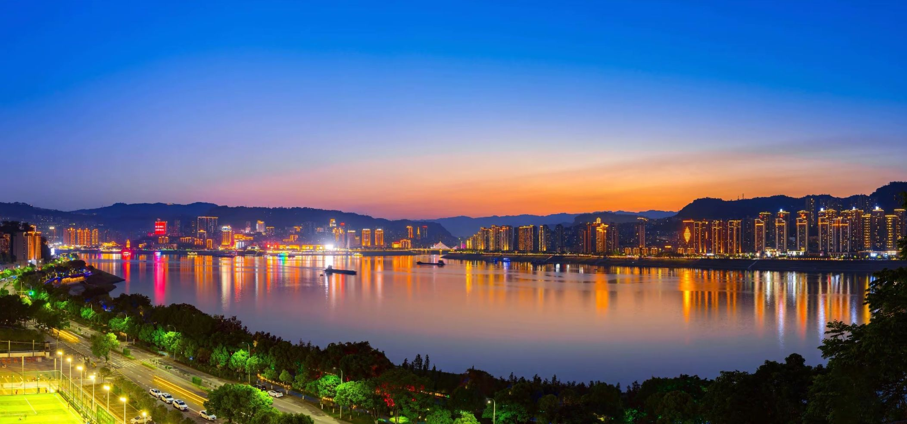

国家4A级旅游景区 · 新三峡十大旅游新景观 · 山水相依湖城相融
三峡平湖旅游区位于万州城市中心，是三峡工程蓄水后形成的“高峡平湖”核心景观，被中央广播电视总台评为新三峡“十大旅游新景观”之一，是国家4A级旅游景区[reference:0]。景区总面积560万平方米，其中水域面积521.3万平方米、陆地面积38.7万平方米，是典型的山水相依、湖城相融的城市型旅游区[reference:1]。
万州城依水而生、靠水而兴，形成了“城在山中、水在城中、人在山水中”的独特城市风貌[reference:2]。三峡工程蓄水至175米后，长江在万州段变成了一个巨大的湖泊，昔日峡谷激流变为平湖碧波。宽阔的江面倒映着两岸高楼，山水、城市、灯火完美交融，构成了一幅“半江瑟瑟半江红”的诗意画卷。
景区总面积
水域面积
蓄水高程
国家级景区等级
万州夜景最大的特色在于“立体”——以南北滨江路繁华区灯饰群为中心，干道和桥梁华灯为纽带，依着山势而建的万家灯火为背景，以烟波浩渺、平滑如镜的万顷平湖为镜子[reference:3]。“一江、两岸、六桥、多点”的夜景格局沿着城市徐徐展开，与夜空下的江面相互呼应[reference:4]。
核心游轮“巴山”号与“交运平湖”号以定制游轮为载体，开启穿越时空的江河之旅[reference:5]。航线时长约50分钟，平日夜游班次为20:15发船[reference:6][reference:7]。
成人票：65元 | 儿童票：33元 | 双人票：120元[reference:8][reference:9]
万州钟楼、飞碟状体育馆、跨江大桥、天生城街区……多处夜景打卡点沿江分布[reference:10]。红花地码头经改造后成为热门夜游地，五彩灯光倒映平湖之上[reference:11]。
北滨大道红花地码头
华灯初上时，人们相约江畔，小酌慢饮，谈天说地，品美食、赏江景，任时光流逝、微风轻拂[reference:12]。乘坐“水上巴士”饱览万州夜景，观看音乐广场水幕电影，感受山在城中、城在水中、山水交融、水城相连的都市风貌，是来万州不可错过的体验[reference:13]。
三峡平湖旅游区通过对三峡地区独有的南北滨江环湖景观带打造，串联起众多城市地标[reference:14]。以下是沿湖分布的重要景观：
万州地标性历史建筑，登楼可俯瞰长江与平湖全景。
百年历史城市公园，古木参天，是市民休闲好去处。
万州历史最悠久的码头之一，承载着长江航运的记忆。
集水幕电影、音乐喷泉于一体，夜晚尤为精彩。
长江边的天然沙滩，亲子游玩与亲水休闲的理想场所。
春季樱花盛开，融合体育健身与休闲赏景。
以万州历史典故命名，是市民聚会与文化活动的重要场所。
连接城区与江岸的特色步道，拾级而下一路望江。
现代化文化地标，常年举办各类展览和演出。
以上景点分散在长江南北两岸，结合游船码头、步行道、自行车道等观光方式，形成完整的环湖游览体系[reference:15]。
南北滨江路是三峡平湖旅游区的核心游览线路，沿175米水位线蜿蜒数十公里，连接起两岸众多景点。这里是万州人散步、骑行、跑步的日常场所，也是游客感受平湖风光的最佳路径。
沿长江北岸展开，途经西山钟楼、十七码头、音乐广场、红砂碛等景点。北滨路三段安装有情景艺术灯光，通过多层光照染色技术实现与植被和构筑物的巧妙结合，夜晚尤为浪漫[reference:16]。
沿长江南岸延伸，途经南滨公园、三生有幸广场、樱花渡体育公园等景点。推窗见景，是“我家住在景区内”的真实写照——三峡平湖旅游区既是景区，也是万州人的家园[reference:17]。
三峡平湖旅游区融合了亲水休闲、水上观光、体育赛事、节会活动、亲子游玩等多种功能[reference:18]。近年来，万州依托平湖水域举办了多项大型水上运动赛事，包括全国桨板联赛、横渡长江游泳公开赛等，吸引了大批水上运动爱好者参与。此外，“大三峡·大巴山”环湖马拉松、冬季横渡长江邀请赛等群众体育活动也经常在此举办。
每到傍晚，璀璨的灯光渐次亮起，灯光倒影在平湖之上，船只来来往往。南北滨江路上人头攒动，人们在江畔散步、骑行、品茶、观景，构成了万州最具烟火气的城市画卷。
※ 以上票价为2025年参考价格，具体以实际购票平台为准。景区游览免费，游船票需另行购买。
“更立西江石壁，截断巫山云雨，高峡出平湖。
神女应无恙，当惊世界殊。”
——毛泽东《水调歌头·游泳》（1956年）
这首写于三峡工程构想之初的壮丽词章，如今已在万州变为触手可及的现实。找一个周末，带上家人，来万州开启一场山水人文交织的诗意之旅吧！[reference:24]